This tutorial will focus on the use of Bayesian estimation to fit simple linear regression models …
Keywords
Software, Statistics, Stan
This tutorial will focus on the use of Bayesian estimation to fit simple linear regression models. BUGS (Bayesian inference Using Gibbs Sampling) is an algorithm and supporting language (resembling R) dedicated to performing the Gibbs sampling implementation of Markov Chain Monte Carlo (MCMC) method. Dialects of the BUGS language are implemented within three main projects:
OpenBUGS - written in component pascal.
JAGS - (Just Another Gibbs Sampler) - written in C++.
Stan - a dedicated Bayesian modelling framework written in C++ and implementing Hamiltonian MCMC samplers.
Whilst the above programs can be used stand-alone, they do offer the rich data pre-processing and graphical capabilities of R, and thus, they are best accessed from within R itself. As such there are multiple packages devoted to interfacing with the various software implementations:
R2OpenBUGS - interfaces with OpenBUGS
R2jags - interfaces with JAGS
rstan - interfaces with Stan
This tutorial will demonstrate how to fit models in Stan (Gelman, Lee, and Guo (2015)) using the package rstan (Stan Development Team (2018)) as interface, which also requires to load some other packages.
Overview
Item response theory (IRT) is a paradigm for investigating the relationship between an individual’s response to a single test item and their performance on an overall measure of the ability or trait that item was intended to measure. Many models exist in the IRT field for evaulating how well an item captures an underlying latent trait, but some of the most popular IRT models are logistic IRT models for dichotmous responses. In particular, the main types of models are:
1 1 parameter logistic model
2 2 parameter logistic model
3 3 parameter logistic model
Throughout this tutorial, I assume that the reader has some basic understanding of IRT model and working knowledge of a software implementation of the Stan language. However, if this is not the case, excellent sources for learning IRT are Baker and Kim (2004), who provide a mathematically detailed introduction to IRT, and Hambleton, Swaminathan, and Rogers (1991), who give an intuitive introduction to the topic. For an in-depth description of how to implement different types of IRT models in Stan, I also refer to this very nice review of Luo and Jiao (2018) and this other online tutorial.
At the core of all the IRT models presented in this tutorial is the Item Response Function (IRF). The IRF estimates the probability of getting item \(j\) “correct” as a function of item characteristics and the \(i\)-th individual’s latent trait/ability level (\(\theta_i\)). These item response functions are defined by a logistic curve (i.e. an \(S\)-shape from \(0-1\)).
1 parameter logistic model (1PLM)
The 1PLM is used for data collected on \(n\) individuals who have each given responses on \(p\) different items. The items have binary outcomes, i.e. the items are scored as \(1\) if correct and \(0\) if not. The \(i\)-th individual in the sample is assumed to have a latent ability \(\theta_i\), and the \(i\)-th individual’s response on the \(j\)-th item is a random variable \(Y_{ij}\) with a Bernoulli distribution. The probability that the \(i\)-th individual correctly answers the \(j\)-th item (i.e. the probability that \(Y_{ij} = 1\)) is assumed to have the following IRF form:
where \(\delta_j\) is the difficulty parameter for item \(j\) of the test, and is assumed to be normally distributed according to some mean \(\mu_{\delta}\) and standard deviation \(\sigma_{\delta}\) which must be specified by the analyst. Each latent ability parameter\(\theta_i\) is also assumed to be distributed according to a standard normal distribution.
Load the data
I read in the data from the file wideformat.csv, which contains (simulated) data from \(n=1000\) individuals taking a \(5\)-item test. Items are coded \(1\) for correct and \(0\) for incorrect responses. When we get descriptives of the data, we see that the items differ in terms of the proportion of people who answered correctly, so we expect that we have some differences in item difficulty here.
Then I specify the model using the following Stan code.
model1<-"data {int<lower=0> n;int<lower=0> p;int<lower=0,upper=1> Y[n,p];}parameters {vector[n] theta;vector[p] delta;real mu_delta;real<lower=0> sigma_delta;}transformed parameters{vector<lower=0,upper=1>[p] prob[n]; for(i in 1:n){ for (j in 1:p){ prob[i,j] = inv_logit(theta[i] - delta[j]); } }}model {theta ~ normal(0,1);delta ~ normal(mu_delta,sigma_delta);mu_delta ~ normal(0,5);sigma_delta ~ cauchy(0,5); for(i in 1:n){ for (j in 1:p){ Y[i,j] ~ bernoulli(prob[i,j]); } }}generated quantities {vector[p] loglik_y[n];vector[p] Y_rep[n]; for (i in 1: n){ for (j in 1: p){ loglik_y[i,j] = bernoulli_lpmf(Y[i,j] | prob[i,j]); Y_rep[i,j] = bernoulli_rng(prob[i,j]); } }}"## write the model to a text filewriteLines(model1, con ="model1PLM.stan")
Next, I define the nodes (parameters and derivatives) to monitor and the chain parameters.
Start the Stan model (check the model, load data into the model, specify the number of chains and compile the model). Run the Stan code via the rstan interface and the stan function.
library(rstan)set.seed(3456)model1_stan<-stan(data = data_list, file ="model1PLM.stan", chains = nChains, pars = params, iter = nIter, warmup = burnInSteps, thin = thinSteps)
NA
NA SAMPLING FOR MODEL 'anon_model' NOW (CHAIN 1).
NA Chain 1:
NA Chain 1: Gradient evaluation took 0.000686 seconds
NA Chain 1: 1000 transitions using 10 leapfrog steps per transition would take 6.86 seconds.
NA Chain 1: Adjust your expectations accordingly!
NA Chain 1:
NA Chain 1:
NA Chain 1: Iteration: 1 / 1750 [ 0%] (Warmup)
NA Chain 1: Iteration: 175 / 1750 [ 10%] (Warmup)
NA Chain 1: Iteration: 350 / 1750 [ 20%] (Warmup)
NA Chain 1: Iteration: 501 / 1750 [ 28%] (Sampling)
NA Chain 1: Iteration: 675 / 1750 [ 38%] (Sampling)
NA Chain 1: Iteration: 850 / 1750 [ 48%] (Sampling)
NA Chain 1: Iteration: 1025 / 1750 [ 58%] (Sampling)
NA Chain 1: Iteration: 1200 / 1750 [ 68%] (Sampling)
NA Chain 1: Iteration: 1375 / 1750 [ 78%] (Sampling)
NA Chain 1: Iteration: 1550 / 1750 [ 88%] (Sampling)
NA Chain 1: Iteration: 1725 / 1750 [ 98%] (Sampling)
NA Chain 1: Iteration: 1750 / 1750 [100%] (Sampling)
NA Chain 1:
NA Chain 1: Elapsed Time: 8.047 seconds (Warm-up)
NA Chain 1: 11.298 seconds (Sampling)
NA Chain 1: 19.345 seconds (Total)
NA Chain 1:
NA
NA SAMPLING FOR MODEL 'anon_model' NOW (CHAIN 2).
NA Chain 2:
NA Chain 2: Gradient evaluation took 0.000512 seconds
NA Chain 2: 1000 transitions using 10 leapfrog steps per transition would take 5.12 seconds.
NA Chain 2: Adjust your expectations accordingly!
NA Chain 2:
NA Chain 2:
NA Chain 2: Iteration: 1 / 1750 [ 0%] (Warmup)
NA Chain 2: Iteration: 175 / 1750 [ 10%] (Warmup)
NA Chain 2: Iteration: 350 / 1750 [ 20%] (Warmup)
NA Chain 2: Iteration: 501 / 1750 [ 28%] (Sampling)
NA Chain 2: Iteration: 675 / 1750 [ 38%] (Sampling)
NA Chain 2: Iteration: 850 / 1750 [ 48%] (Sampling)
NA Chain 2: Iteration: 1025 / 1750 [ 58%] (Sampling)
NA Chain 2: Iteration: 1200 / 1750 [ 68%] (Sampling)
NA Chain 2: Iteration: 1375 / 1750 [ 78%] (Sampling)
NA Chain 2: Iteration: 1550 / 1750 [ 88%] (Sampling)
NA Chain 2: Iteration: 1725 / 1750 [ 98%] (Sampling)
NA Chain 2: Iteration: 1750 / 1750 [100%] (Sampling)
NA Chain 2:
NA Chain 2: Elapsed Time: 7.676 seconds (Warm-up)
NA Chain 2: 11.291 seconds (Sampling)
NA Chain 2: 18.967 seconds (Total)
NA Chain 2:
Plot the item characteristic curves
Item characteristic curves (ICC) are the logistic curves which result from the fitted models (e.g. estimated item difficulty, plugged into the item response function). Latent trait/ability is plotted on the \(x\)-axis (higher values represent hight ability). Probability of a “correct” answer (\(Y_{ij}=1\)) to an item is plotted on the \(y\)-axis.
#extract parametersmodel1_stan_par<-extract(model1_stan)#see average value of item difficultydiff<-model1_stan_par$deltaapply(diff,2,mean)
NA [1] -2.8607139 -1.0645087 -0.2625512 -1.3897885 -2.2186421
#plot icc for each individual with respect to each of the 5 itemstheta<-apply(model1_stan_par$theta, 2, mean)prob<-apply(model1_stan_par$prob,c(2,3),mean)plot(theta,prob[,1], type ="n", ylab ="probability of correct response", xlab="ability",xlim =c(-2.5,1), ylim =c(0,1))lines(theta,prob[,1],col="red")lines(theta,prob[,2],col="blue")lines(theta,prob[,3],col="orange")lines(theta,prob[,4],col="green")lines(theta,prob[,5],col="black")legend("bottomright",legend =c("1","2","3","4","5"), lty =c(1), col=c("red","blue","orange","green","black"), bty ="n", cex =0.5)
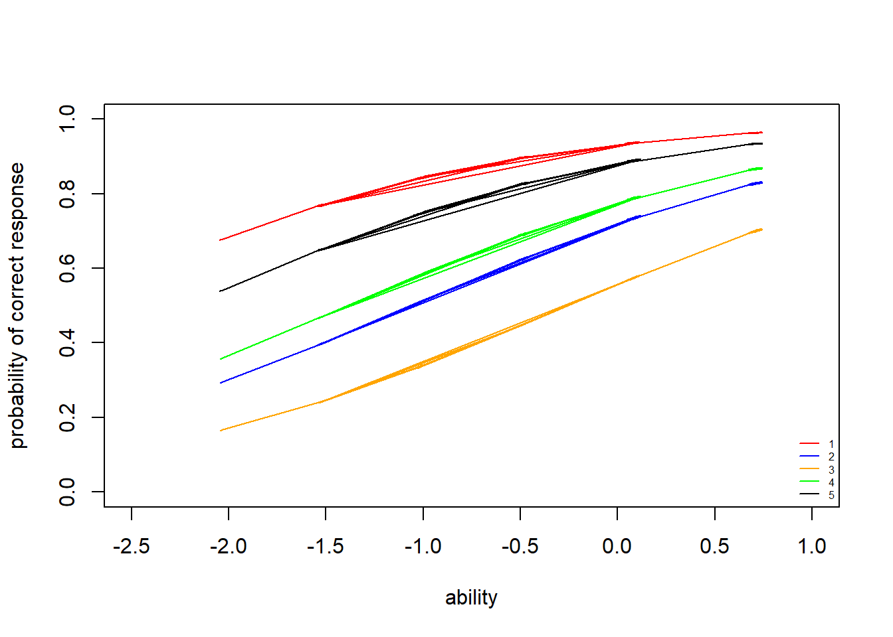
We see that item \(3\) is the most difficult item (it’s curve is farthest to the right), and item \(1\) is the easiest (it’s curve is farthest to the left). The same conclusions can be drawn by checking the difficulty estimates above.
Plot the item information curves
Item information curves (IIC) show how much “information” about the latent trait ability an item gives. Mathematically, these are the \(1\)st derivatives of the ICCs or, equivalently, to the product of the probability of correct and incorrect response. Item information curves peak at the difficulty value (point where the item has the highest discrimination), with less information at ability levels farther from the difficulty estimate. Practially speaking, we can see how a very difficult item will provide very little information about persons with low ability (because the item is already too hard), and very easy items will provide little information about persons with high ability levels.
#plot iic for each individual with respect to each of the 5 itemsneg_prob<-1-probinformation<-prob*neg_probplot(theta,information[,1], type ="n", ylab ="information", xlab="ability",xlim =c(-2.5,1), ylim =c(0,0.3))lines(theta,information[,1],col="red")lines(theta,information[,2],col="blue")lines(theta,information[,3],col="orange")lines(theta,information[,4],col="green")lines(theta,information[,5],col="black")legend("bottomleft",legend =c("1","2","3","4","5"), lty =c(1), col=c("red","blue","orange","green","black"), bty ="n", cex =0.5)
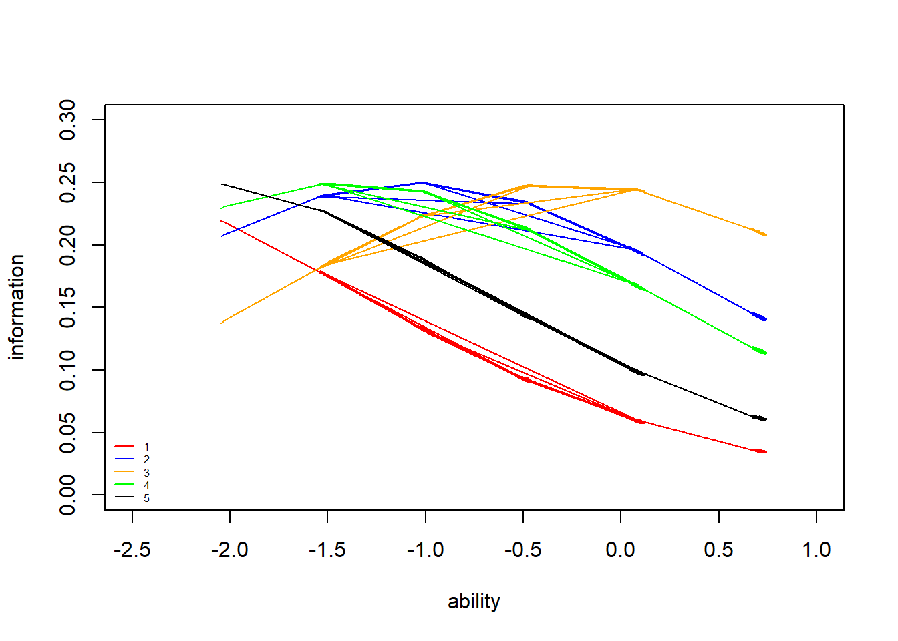
Similar to the ICCs, we see that item \(3\) provides the most information about high ability levels (the peak of its IIC is farthest to the right) and item \(1\) and \(5\) provides the most information about lower ability levels (the peak of its IIC is farthest to the left). We have seen that all ICCs and IICs for the items have the same shape in the 1PL model (i.e. all items are equally good at providing information about the latent trait). In the 2PL and 3PL models, we will see that this does not have to be the case.
Next, we plot the information curve for the whole test. This is simply the sum of the individual IICs above. Ideally, we want a test which provides fairly good covereage of a wide range of latent ability levels. Otherwise, the test is only good at identifying a limited range of ability levels.
#plot iic for each individual with respect to whole testinformation_test<-apply(information,1,sum)plot(theta,information_test, type ="n", ylab ="information (test)", xlab="ability",xlim =c(-2.5,1), ylim =c(0,1.5))lines(theta,information_test,col="black",lty=2)
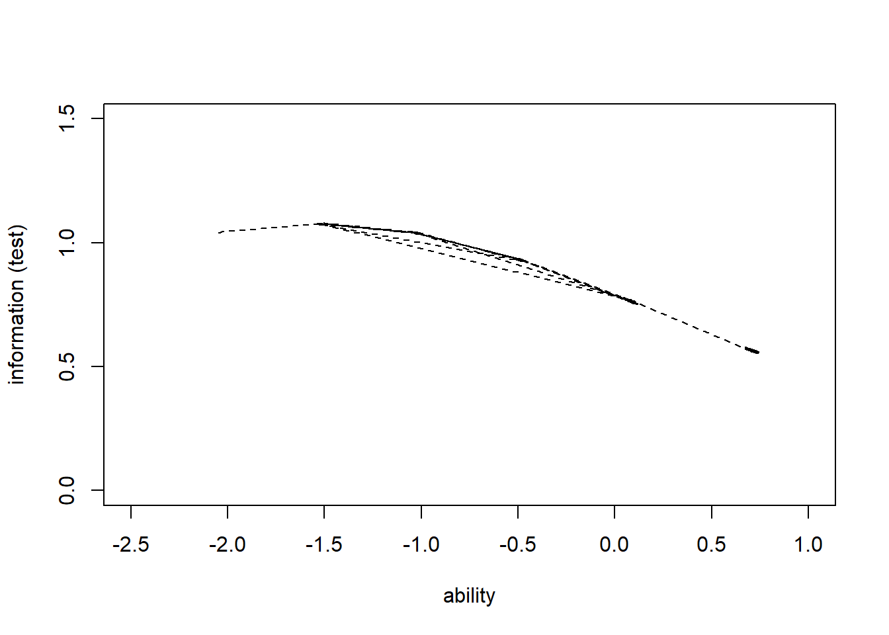
summary(information_test)
NA Min. 1st Qu. Median Mean 3rd Qu. Max.
NA 0.5527 0.5698 0.7664 0.7753 0.9309 1.0789
We see that this test provides the most information about low ability levels (the peak is around ability level \(-1.5\)), and less information about very high ability levels.
Assess fit
We perform posterior predictive checks to test whether individual items fit the 1PLM by comparing quantities computed from the predictions of the model with those from the observed data. If these match reasonably well, then there is indication that the model has a good fit.
library(bayesplot)library(ggplot2)Y.rep<-model1_stan_par$Y_rep#Bar plot of y with yrep medians and uncertainty intervals superimposed on the barsppc_bars(Y[,1],Y.rep[1:8,,1]) +ggtitle("Item 1")
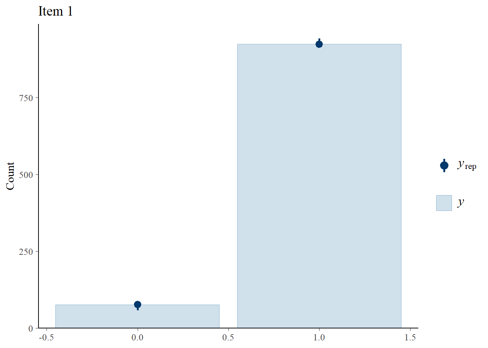
ppc_bars(Y[,2],Y.rep[1:8,,2]) +ggtitle("Item 2")
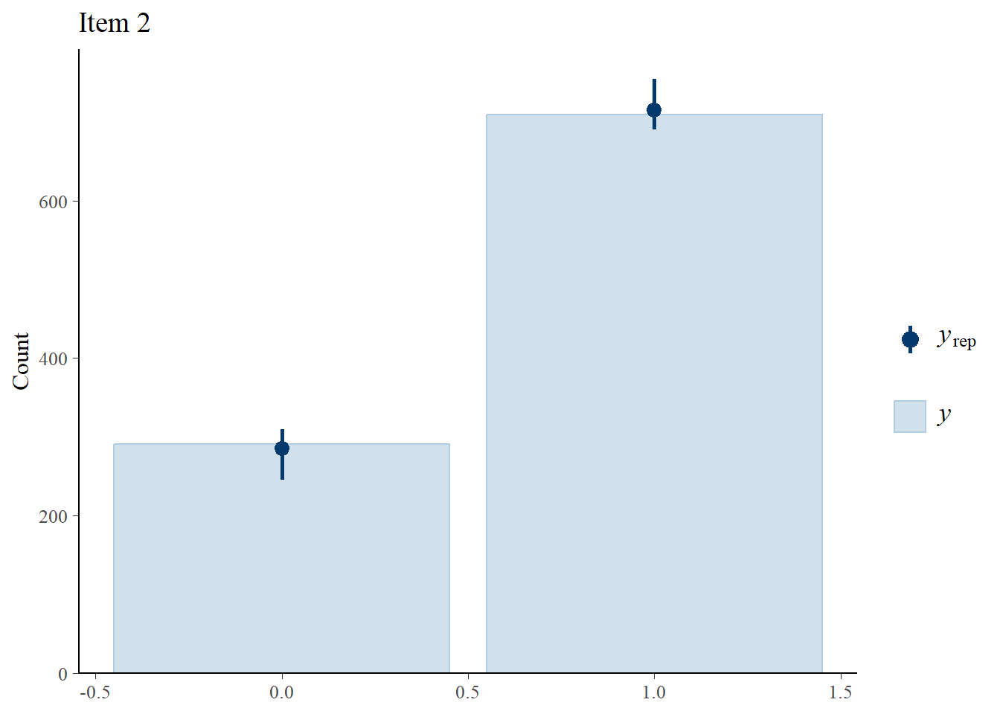
ppc_bars(Y[,3],Y.rep[1:8,,3]) +ggtitle("Item 3")
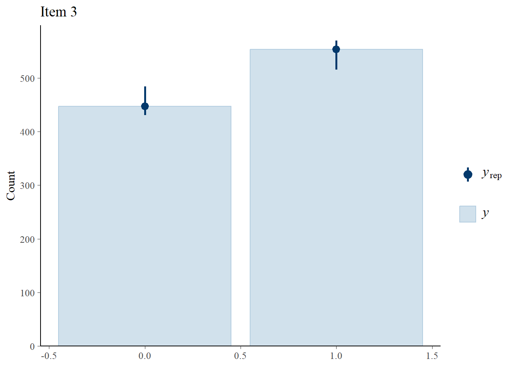
ppc_bars(Y[,4],Y.rep[1:8,,4]) +ggtitle("Item 4")
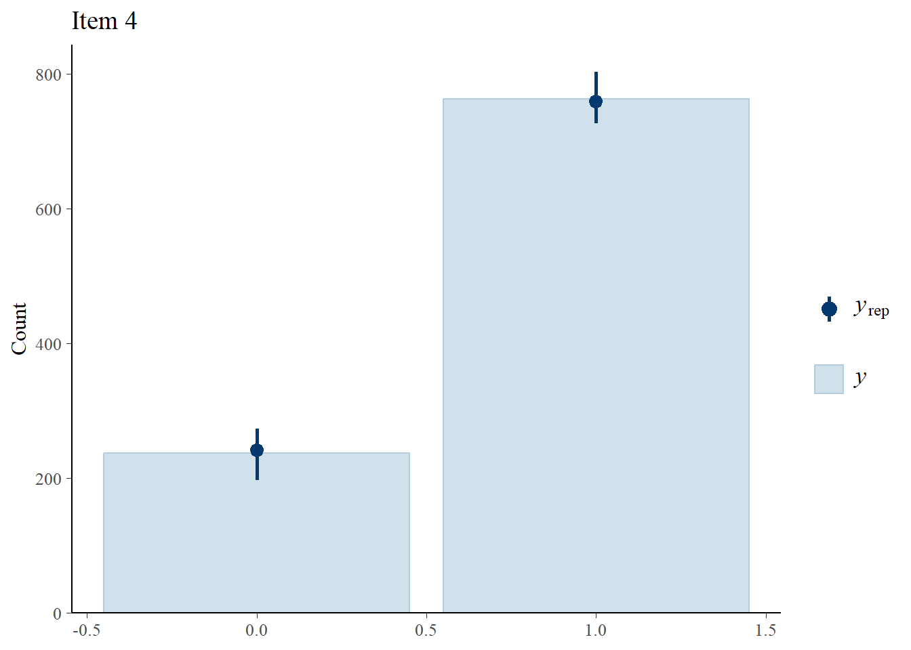
ppc_bars(Y[,5],Y.rep[1:8,,5]) +ggtitle("Item 5")
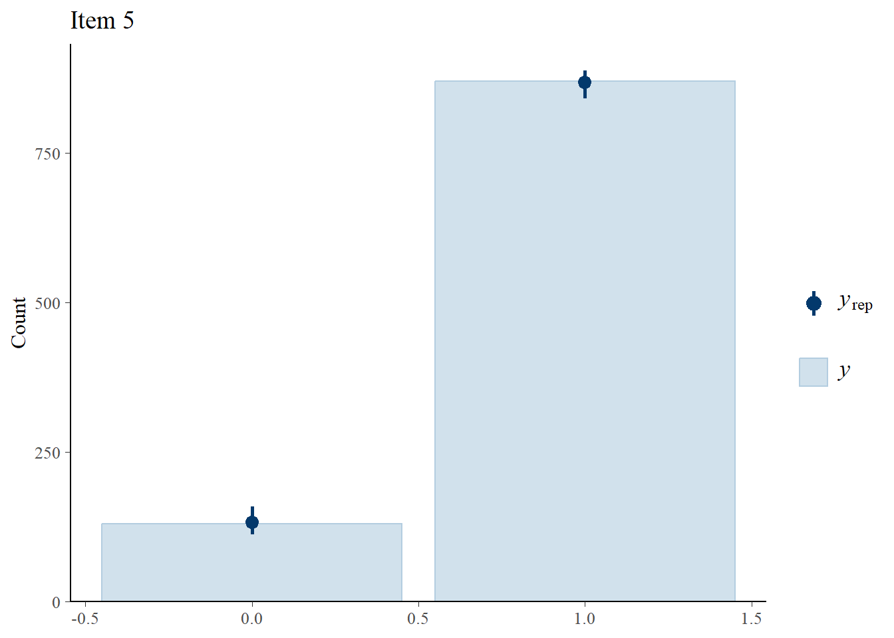
Plot ability scores
We can conclude by summarising and plotting the latent ability scores of the participants
#summary stats for theta across both iterations and individualssummary(theta)
NA Min. 1st Qu. Median Mean 3rd Qu. Max.
NA -2.0462862 -0.4876188 0.0766153 -0.0001134 0.6947979 0.7444596
#histogram and kernel density plot of theta averaged across iterationsdens.theta<-density(theta, bw=0.3)hist(theta, breaks =5, prob = T)lines(dens.theta, lwd=2, col="red")
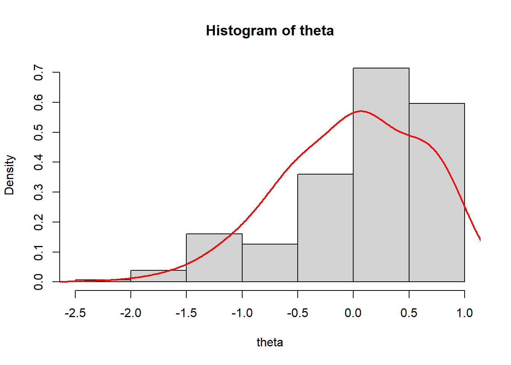
We see that the mean of ability scores is around \(0\), and the standard deviation about \(1\) (these are estimated ability scores are standardised).
2 parameter logistic model (2PLM)
In the 2PLM, the probability that the \(i\)-th individual correctly answers the \(j\)-th item (i.e. the probability that \(Y_{ij} = 1\)) is assumed to have the following IRF form:
where \(\alpha_j\) is the discrimination parameter for item \(j\) of the test, and is assumed to be positive and lognormally distributed according to some mean \(\mu_{\alpha}\) and standard deviation \(\sigma_{\alpha}\) which must be specified by the analyst. The item discriminability \(\alpha_j\) indicates how well an item is able to discriminate between persons with different ability levels. Item discriminability is reflected in the steepness of the slope of the ICC.
Fit the model
We fit the 2PLM to the data using the following Stan code.
model2<-"data {int<lower=0> n;int<lower=0> p;int<lower=0,upper=1> Y[n,p];}parameters {vector[n] theta;vector<lower=0> [p] alpha;vector[p] delta;real mu_delta;real<lower=0> sigma_alpha;real<lower=0> sigma_delta;}transformed parameters{vector<lower=0,upper=1>[p] prob[n]; for(i in 1:n){ for (j in 1:p){ prob[i,j] = inv_logit(alpha[j]*(theta[i] - delta[j])); } }}model {theta ~ normal(0,1);delta ~ normal(mu_delta,sigma_delta);mu_delta ~ normal(0,5);sigma_delta ~ cauchy(0,5);alpha ~ lognormal(0,sigma_alpha);sigma_alpha ~ cauchy(0,5); for(i in 1:n){ for (j in 1:p){ Y[i,j] ~ bernoulli(prob[i,j]); } }}generated quantities {vector[p] loglik_y[n];vector[p] Y_rep[n]; for (i in 1: n){ for (j in 1: p){ loglik_y[i,j] = bernoulli_lpmf(Y[i,j] | prob[i,j]); Y_rep[i,j] = bernoulli_rng(prob[i,j]); } }}"## write the model to a text filewriteLines(model2, con ="model2PLM.stan")
Next, I define the nodes (parameters and derivatives) to monitor and the chain parameters.
Start the Stan model (check the model, load data into the model, specify the number of chains and compile the model). Run the Stan code via the rstan interface and the stan function.
set.seed(3456)model2_stan<-stan(data = data_list, file ="model2PLM.stan", chains = nChains, pars = params, iter = nIter, warmup = burnInSteps, thin = thinSteps)
NA
NA SAMPLING FOR MODEL 'anon_model' NOW (CHAIN 1).
NA Chain 1:
NA Chain 1: Gradient evaluation took 0.000745 seconds
NA Chain 1: 1000 transitions using 10 leapfrog steps per transition would take 7.45 seconds.
NA Chain 1: Adjust your expectations accordingly!
NA Chain 1:
NA Chain 1:
NA Chain 1: Iteration: 1 / 1750 [ 0%] (Warmup)
NA Chain 1: Iteration: 175 / 1750 [ 10%] (Warmup)
NA Chain 1: Iteration: 350 / 1750 [ 20%] (Warmup)
NA Chain 1: Iteration: 501 / 1750 [ 28%] (Sampling)
NA Chain 1: Iteration: 675 / 1750 [ 38%] (Sampling)
NA Chain 1: Iteration: 850 / 1750 [ 48%] (Sampling)
NA Chain 1: Iteration: 1025 / 1750 [ 58%] (Sampling)
NA Chain 1: Iteration: 1200 / 1750 [ 68%] (Sampling)
NA Chain 1: Iteration: 1375 / 1750 [ 78%] (Sampling)
NA Chain 1: Iteration: 1550 / 1750 [ 88%] (Sampling)
NA Chain 1: Iteration: 1725 / 1750 [ 98%] (Sampling)
NA Chain 1: Iteration: 1750 / 1750 [100%] (Sampling)
NA Chain 1:
NA Chain 1: Elapsed Time: 17.619 seconds (Warm-up)
NA Chain 1: 49.041 seconds (Sampling)
NA Chain 1: 66.66 seconds (Total)
NA Chain 1:
NA
NA SAMPLING FOR MODEL 'anon_model' NOW (CHAIN 2).
NA Chain 2:
NA Chain 2: Gradient evaluation took 0.001071 seconds
NA Chain 2: 1000 transitions using 10 leapfrog steps per transition would take 10.71 seconds.
NA Chain 2: Adjust your expectations accordingly!
NA Chain 2:
NA Chain 2:
NA Chain 2: Iteration: 1 / 1750 [ 0%] (Warmup)
NA Chain 2: Iteration: 175 / 1750 [ 10%] (Warmup)
NA Chain 2: Iteration: 350 / 1750 [ 20%] (Warmup)
NA Chain 2: Iteration: 501 / 1750 [ 28%] (Sampling)
NA Chain 2: Iteration: 675 / 1750 [ 38%] (Sampling)
NA Chain 2: Iteration: 850 / 1750 [ 48%] (Sampling)
NA Chain 2: Iteration: 1025 / 1750 [ 58%] (Sampling)
NA Chain 2: Iteration: 1200 / 1750 [ 68%] (Sampling)
NA Chain 2: Iteration: 1375 / 1750 [ 78%] (Sampling)
NA Chain 2: Iteration: 1550 / 1750 [ 88%] (Sampling)
NA Chain 2: Iteration: 1725 / 1750 [ 98%] (Sampling)
NA Chain 2: Iteration: 1750 / 1750 [100%] (Sampling)
NA Chain 2:
NA Chain 2: Elapsed Time: 16.85 seconds (Warm-up)
NA Chain 2: 25.604 seconds (Sampling)
NA Chain 2: 42.454 seconds (Total)
NA Chain 2:
Plot the item characteristic curves
Item characteristic curves (ICC) are the logistic curves which result from the fitted models (e.g. estimated item difficulty, plugged into the item response function). Latent trait/ability is plotted on the \(x\)-axis (higher values represent hight ability). Probability of a “correct” answer (\(Y_{ij}=1\)) to an item is plotted on the \(y\)-axis.
#extract parametersmodel2_stan_par<-extract(model2_stan)discr<-model2_stan_par$alphadiff<-model2_stan_par$delta#see average value of item difficultyapply(diff,2,mean)
NA [1] -3.1999792 -1.3773558 -0.3093908 -1.8061242 -2.7793706
#see average value of item discriminabilityapply(discr,2,mean)
NA [1] 0.9180807 0.7605854 0.8462632 0.7522866 0.7916501
#plot icc for each individual with respect to each of the 5 itemstheta<-apply(model2_stan_par$theta, 2, mean)prob<-apply(model2_stan_par$prob,c(2,3),mean)plot(theta,prob[,1], type ="n", ylab ="probability of correct response", xlab="ability",xlim =c(-2.5,1), ylim =c(0,1))lines(theta,prob[,1],col="red")lines(theta,prob[,2],col="blue")lines(theta,prob[,3],col="orange")lines(theta,prob[,4],col="green")lines(theta,prob[,5],col="black")legend("bottomright",legend =c("1","2","3","4","5"), lty =c(1), col=c("red","blue","orange","green","black"), bty ="n", cex =0.5)
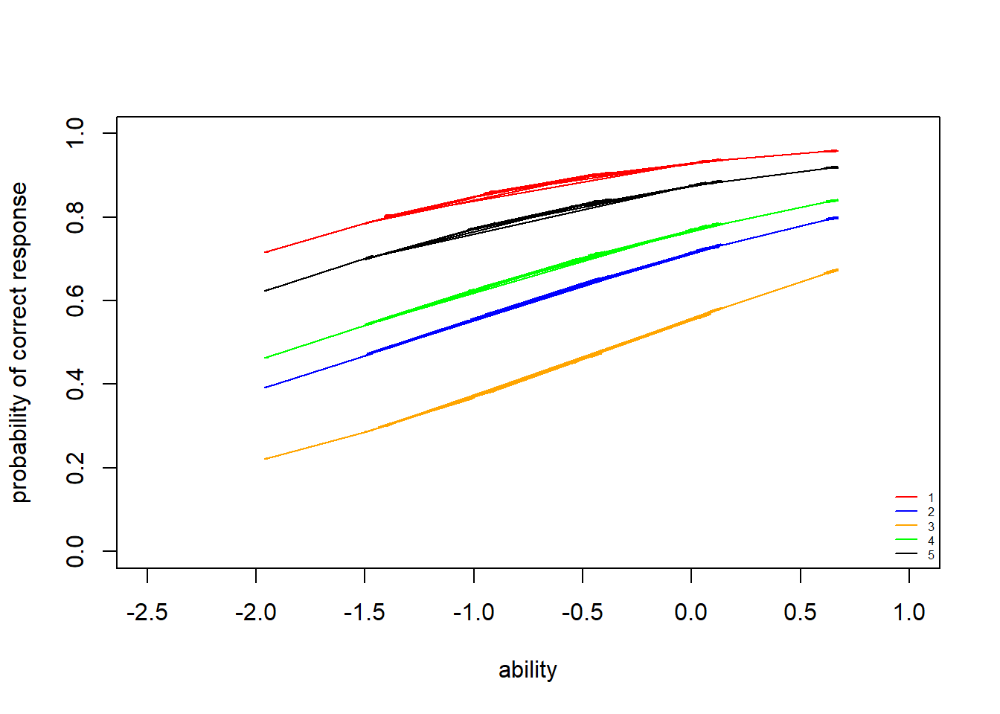
Unlike the ICCs for the 1PLM, the ICCs for the 2PLM do not all have the same shape. Item curves which are more “spread out” indicate lower discriminability (i.e. that individuals of a range of ability levels have some probability of getting the item correct). Compare this to an item with high discriminability (steep slope): for this item, we have a better estimate of the individual’s latent ability based on whether they got the question right or wrong. Because of the differing slopes, the rank-order of item difficulty changes across different latent ability levels. We can see that item \(3\) is still the most difficult item (i.e. lowest probability of getting correct for most latent trait values, up until about \(\theta=0.2\)). Items \(1\) and \(5\) are the easiest.
Plot the item information curves
Item information curves (IIC) show how much “information” about the latent trait ability an item gives. Mathematically, these are the \(1\)st derivatives of the ICCs or, equivalently, to the product of the probability of correct and incorrect response. Item information curves peak at the difficulty value (point where the item has the highest discrimination), with less information at ability levels farther from the difficulty estimate. Practially speaking, we can see how a very difficult item will provide very little information about persons with low ability (because the item is already too hard), and very easy items will provide little information about persons with high ability levels.
#plot iic for each individual with respect to each of the 5 itemsneg_prob<-1-probinformation<-prob*neg_probinformation2<-information*(apply(discr,2,mean))^2plot(theta,information2[,1], type ="n", ylab ="information", xlab="ability",xlim =c(-2.5,1), ylim =c(0,0.3))lines(theta,information2[,1],col="red")lines(theta,information2[,2],col="blue")lines(theta,information2[,3],col="orange")lines(theta,information2[,4],col="green")lines(theta,information2[,5],col="black")legend("bottomleft",legend =c("1","2","3","4","5"), lty =c(1), col=c("red","blue","orange","green","black"), bty ="n", cex =0.5)
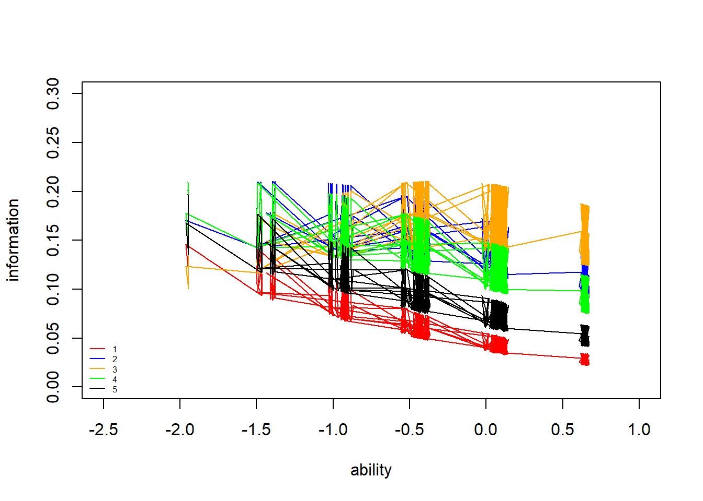
The item IICs demonstrate that some items provide more information about latent ability for different ability levels. The higher the item discriminability estimate, the more information an item provides about ability levels around the point where there is a \(50\%\) chance of getting the item right (i.e. the steepest point in the ICC slope). For example, item \(3\) (orange) clearly provides the most information at high ability levels, around \(\theta=-0.5\), but almost no information about low ability levels (\(< -1\)) because the item is already too hard for those participants. In contrast, item \(1\) (red), which has low discriminability, doesn’t give very much information overall, but covers a wide range of ability levels.
Next, we plot the item information curve for the whole test. This is the sum of all the item IICs above.
#plot iic for each individual with respect to whole testinformation_test<-apply(information2,1,sum)plot(theta,information_test, type ="n", ylab ="information (test)", xlab="ability",xlim =c(-2.5,1), ylim =c(0,1.5))lines(theta,information_test,col="black",lty=2)
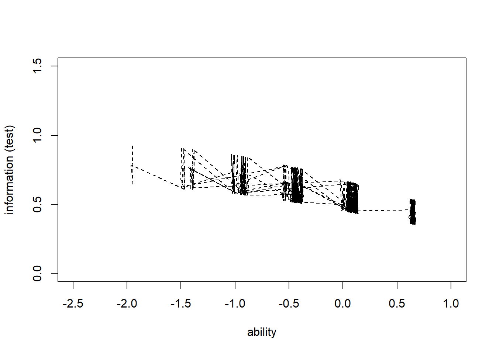
summary(information_test)
NA Min. 1st Qu. Median Mean 3rd Qu. Max.
NA 0.3521 0.4463 0.5206 0.5280 0.5837 0.9238
The IIC for the whole test shows that the test provides the most information for slightly-lower-than average ability levels (about \(\theta=-1\)), but does not provide much information about extremely high ability levels.
Assess fit
Next, we check how well the 2PLM fits the data.
Y.rep<-model2_stan_par$Y_rep#Bar plot of y with yrep medians and uncertainty intervals superimposed on the barsppc_bars(Y[,1],Y.rep[1:8,,1]) +ggtitle("Item 1")
ppc_bars(Y[,2],Y.rep[1:8,,2]) +ggtitle("Item 2")
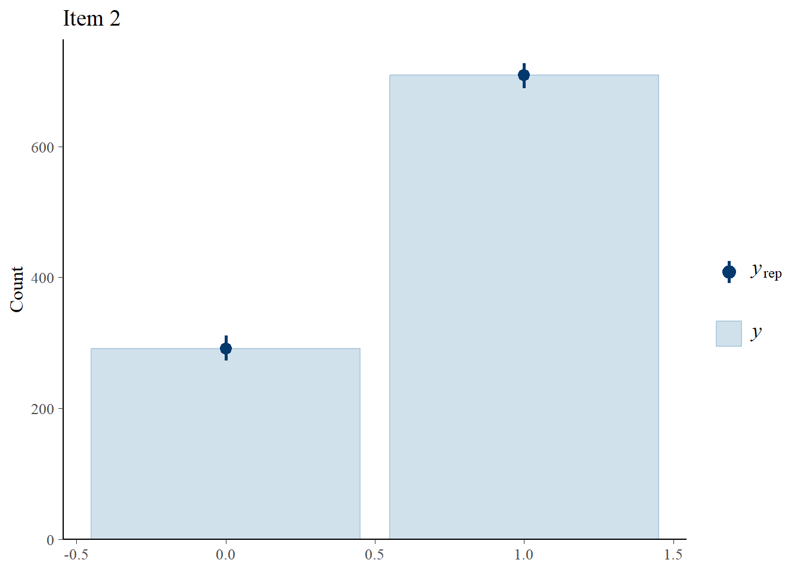
ppc_bars(Y[,3],Y.rep[1:8,,3]) +ggtitle("Item 3")
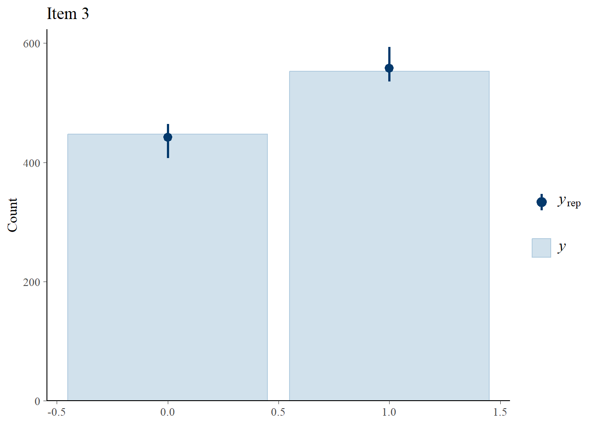
ppc_bars(Y[,4],Y.rep[1:8,,4]) +ggtitle("Item 4")
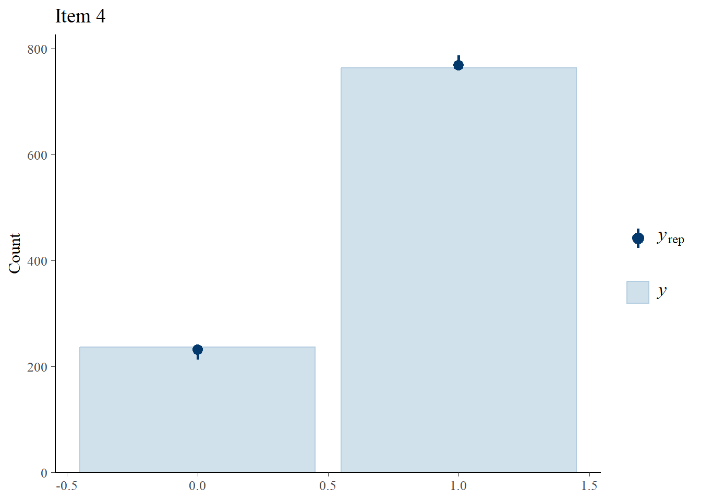
ppc_bars(Y[,5],Y.rep[1:8,,5]) +ggtitle("Item 5")
We can also compare the fit of the 1PLM and 2PLM using relative measures of fit or information criteria. These are computed based on the deviance and a penalty for model complexity called the effective number of parameters \(p\). Here we consider two Bayesian measures known as the Widely Applicable (WAIC) and Leave One Out (LOOIC) Information Criterion, which can be easily obtained through the functions waic and loo in the package loo.
Both criteria suggest that the 2PLM has a slightly better fit to the data.
Plot ability scores
Plot the density curve of the estimated ability scores
#summary stats for theta across both iterations and individualssummary(theta)
NA Min. 1st Qu. Median Mean 3rd Qu. Max.
NA -1.9620636 -0.4347622 0.0659988 0.0006122 0.6347629 0.6738680
#histogram and kernel density plot of theta averaged across iterationsdens.theta<-density(theta, bw=0.3)hist(theta, breaks =5, prob = T)lines(dens.theta, lwd=2, col="red")
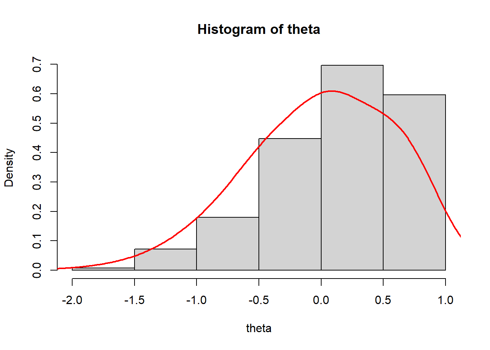
We see that the mean of ability scores is around \(0\), and the standard deviation about \(1\) (these are estimated ability scores are standardised).
3 parameter logistic model (3PLM)
In the 3PLM, the probability that the \(i\)-th individual correctly answers the \(j\)-th item (i.e. the probability that \(Y_{ij} = 1\)) is assumed to have the following IRF form:
where \(\eta_j\) is the guessing parameter. Under this model, individuals with zero ability have a nonzero chance of endorsing any item, just by guessing randomly. The guessing parameter is reflected in the \(y\)-intercept (i.e. probability) of the ICC. The parameter is normally distributed according to some mean \(\mu_{\eta}\) and standard deviation \(\sigma_{\eta}\) which must be specified by the analyst.
Fit the model
We fit the 3PLM to the data using the following Stan code.
model3<-"data {int<lower=0> n;int<lower=0> p;int<lower=0,upper=1> Y[n,p];}parameters {vector[n] theta;vector<lower=0> [p] alpha;vector[p] delta;vector<lower=0,upper=1>[p] eta; //item pseudo-guessingreal mu_delta;real<lower=0> sigma_alpha;real<lower=0> sigma_delta;}transformed parameters{vector<lower=0,upper=1>[p] prob_star[n];vector<lower=0,upper=1>[p] prob[n]; for(i in 1:n){ for (j in 1:p){ prob_star[i,j] = inv_logit(alpha[j]*(theta[i] - delta[j])); prob[i, j] = eta[j] + (1-eta[j])*prob_star[i,j]; } }}model {theta ~ normal(0,1);delta ~ normal(mu_delta,sigma_delta);mu_delta ~ normal(0,5);sigma_delta ~ cauchy(0,5);alpha ~ lognormal(0,sigma_alpha);sigma_alpha ~ cauchy(0,5);eta ~ beta(5,23); for(i in 1:n){ for (j in 1:p){ Y[i,j] ~ bernoulli(prob[i,j]); } }}generated quantities {vector[p] loglik_y[n];vector[p] Y_rep[n]; for (i in 1: n){ for (j in 1: p){ loglik_y[i,j] = bernoulli_lpmf(Y[i,j] | prob[i,j]); Y_rep[i,j] = bernoulli_rng(prob[i,j]); } }}"## write the model to a text filewriteLines(model3, con ="model3PLM.stan")
Next, I define the nodes (parameters and derivatives) to monitor and the chain parameters.
Start the Stan model (check the model, load data into the model, specify the number of chains and compile the model). Run the Stan code via the rstan interface and the stan function.
set.seed(3456)model3_stan<-stan(data = data_list, file ="model3PLM.stan", chains = nChains, pars = params, iter = nIter, warmup = burnInSteps, thin = thinSteps)
NA
NA SAMPLING FOR MODEL 'anon_model' NOW (CHAIN 1).
NA Chain 1:
NA Chain 1: Gradient evaluation took 0.000959 seconds
NA Chain 1: 1000 transitions using 10 leapfrog steps per transition would take 9.59 seconds.
NA Chain 1: Adjust your expectations accordingly!
NA Chain 1:
NA Chain 1:
NA Chain 1: Iteration: 1 / 1750 [ 0%] (Warmup)
NA Chain 1: Iteration: 175 / 1750 [ 10%] (Warmup)
NA Chain 1: Iteration: 350 / 1750 [ 20%] (Warmup)
NA Chain 1: Iteration: 501 / 1750 [ 28%] (Sampling)
NA Chain 1: Iteration: 675 / 1750 [ 38%] (Sampling)
NA Chain 1: Iteration: 850 / 1750 [ 48%] (Sampling)
NA Chain 1: Iteration: 1025 / 1750 [ 58%] (Sampling)
NA Chain 1: Iteration: 1200 / 1750 [ 68%] (Sampling)
NA Chain 1: Iteration: 1375 / 1750 [ 78%] (Sampling)
NA Chain 1: Iteration: 1550 / 1750 [ 88%] (Sampling)
NA Chain 1: Iteration: 1725 / 1750 [ 98%] (Sampling)
NA Chain 1: Iteration: 1750 / 1750 [100%] (Sampling)
NA Chain 1:
NA Chain 1: Elapsed Time: 15.626 seconds (Warm-up)
NA Chain 1: 29.036 seconds (Sampling)
NA Chain 1: 44.662 seconds (Total)
NA Chain 1:
NA
NA SAMPLING FOR MODEL 'anon_model' NOW (CHAIN 2).
NA Chain 2:
NA Chain 2: Gradient evaluation took 0.000674 seconds
NA Chain 2: 1000 transitions using 10 leapfrog steps per transition would take 6.74 seconds.
NA Chain 2: Adjust your expectations accordingly!
NA Chain 2:
NA Chain 2:
NA Chain 2: Iteration: 1 / 1750 [ 0%] (Warmup)
NA Chain 2: Iteration: 175 / 1750 [ 10%] (Warmup)
NA Chain 2: Iteration: 350 / 1750 [ 20%] (Warmup)
NA Chain 2: Iteration: 501 / 1750 [ 28%] (Sampling)
NA Chain 2: Iteration: 675 / 1750 [ 38%] (Sampling)
NA Chain 2: Iteration: 850 / 1750 [ 48%] (Sampling)
NA Chain 2: Iteration: 1025 / 1750 [ 58%] (Sampling)
NA Chain 2: Iteration: 1200 / 1750 [ 68%] (Sampling)
NA Chain 2: Iteration: 1375 / 1750 [ 78%] (Sampling)
NA Chain 2: Iteration: 1550 / 1750 [ 88%] (Sampling)
NA Chain 2: Iteration: 1725 / 1750 [ 98%] (Sampling)
NA Chain 2: Iteration: 1750 / 1750 [100%] (Sampling)
NA Chain 2:
NA Chain 2: Elapsed Time: 17.019 seconds (Warm-up)
NA Chain 2: 29.021 seconds (Sampling)
NA Chain 2: 46.04 seconds (Total)
NA Chain 2:
Plot the item characteristic curves
Item characteristic curves (ICC) are the logistic curves which result from the fitted models (e.g. estimated item difficulty, plugged into the item response function). Latent trait/ability is plotted on the \(x\)-axis (higher values represent hight ability). Probability of a “correct” answer (\(Y_{ij}=1\)) to an item is plotted on the \(y\)-axis.
#extract parametersmodel3_stan_par<-extract(model3_stan)discr<-model3_stan_par$alphadiff<-model3_stan_par$deltagues<-model3_stan_par$eta#see average value of item difficultyapply(diff,2,mean)
NA [1] -2.8000531 -0.7982283 0.1709581 -1.2011374 -2.1901744
#see average value of item discriminabilityapply(discr,2,mean)
NA [1] 0.9504686 0.8863304 1.0198040 0.8720698 0.8853051
#see average value of item guessingapply(gues,2,mean)
NA [1] 0.1894722 0.1841677 0.1635017 0.1926284 0.1920851
#plot icc for each individual with respect to each of the 5 itemstheta<-apply(model3_stan_par$theta, 2, mean)prob<-apply(model3_stan_par$prob,c(2,3),mean)plot(theta,prob[,1], type ="n", ylab ="probability of correct response", xlab="ability",xlim =c(-2.5,1), ylim =c(0,1))lines(theta,prob[,1],col="red")lines(theta,prob[,2],col="blue")lines(theta,prob[,3],col="orange")lines(theta,prob[,4],col="green")lines(theta,prob[,5],col="black")legend("bottomright",legend =c("1","2","3","4","5"), lty =c(1), col=c("red","blue","orange","green","black"), bty ="n", cex =0.5)
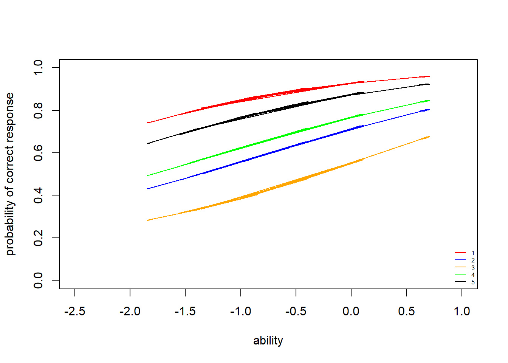
The slopes of the ICCs look very similar to those of the 2PLM. We can see that all items have \(y\)-intercepts greater than zero, so that even at very low ability levels, there is some chance of getting these items correct (via guessing).
Plot the item information curves
Item information curves (IIC) show how much “information” about the latent trait ability an item gives. Mathematically, these are the \(1\)st derivatives of the ICCs or, equivalently, to the product of the probability of correct and incorrect response. Item information curves peak at the difficulty value (point where the item has the highest discrimination), with less information at ability levels farther from the difficulty estimate. Practially speaking, we can see how a very difficult item will provide very little information about persons with low ability (because the item is already too hard), and very easy items will provide little information about persons with high ability levels.
Here I plot the IICs using points, rather than lines, to better display the patterns of the individuals, which vary substantially according to whether the item was correctly chosen due to chance or not.
#plot iic for each individual with respect to each of the 5 itemsneg_prob<-1-probinformation.p1<-neg_prob/probinformation.p2<-(prob-apply(gues,2,mean))^2/(1-apply(gues,2,mean))^2information3<-(apply(discr,2,mean))^2*(information.p2)*(information.p1)plot(theta,information3[,1], type ="n", ylab ="information", xlab="ability",xlim =c(-2.5,1), ylim =c(0,0.7))points(theta,information3[,1],col="red")points(theta,information3[,2],col="blue")points(theta,information3[,3],col="orange")points(theta,information3[,4],col="green")points(theta,information3[,5],col="black")legend("bottomleft",legend =c("1","2","3","4","5"), lty =c(1), col=c("red","blue","orange","green","black"), bty ="n", cex =0.5)
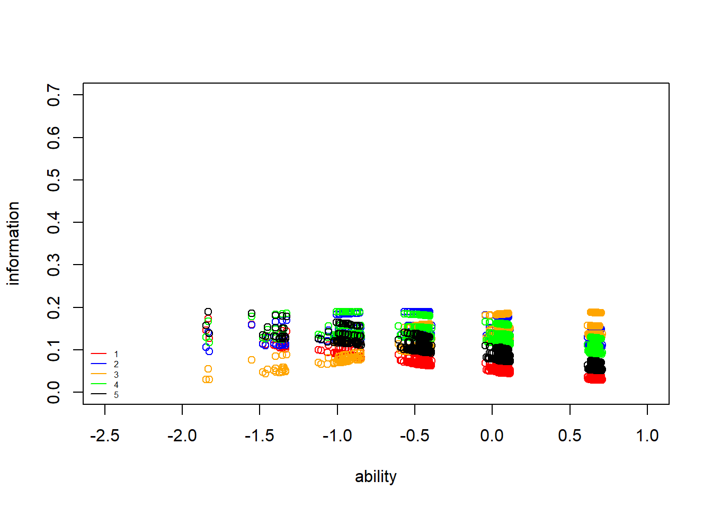
Next, we plot the item information curve for the whole test. This is the sum of all the item IICs above.
#plot iic for each individual with respect to whole testinformation_test<-apply(information3,1,sum)plot(theta,information_test, type ="n", ylab ="information (test)", xlab="ability",xlim =c(-2.5,1), ylim =c(0,1.5))points(theta,information_test,col="black",lty=2)
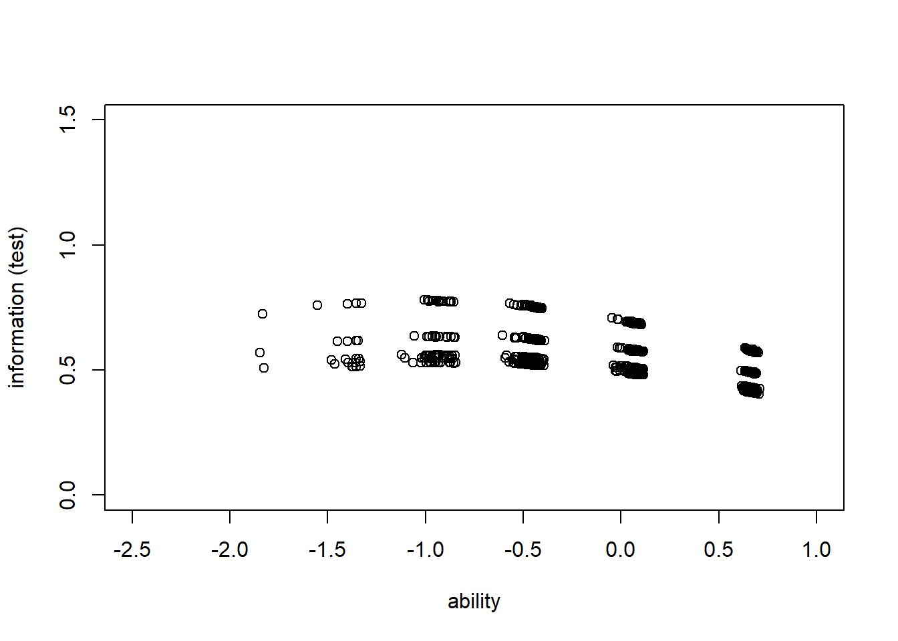
summary(information_test)
NA Min. 1st Qu. Median Mean 3rd Qu. Max.
NA 0.4050 0.4876 0.5259 0.5430 0.5794 0.7800
Assess fit
Next, we check how well the 3PLM fits the data.
Y.rep<-model3_stan_par$Y_rep#Bar plot of y with yrep medians and uncertainty intervals superimposed on the barsppc_bars(Y[,1],Y.rep[1:8,,1]) +ggtitle("Item 1")
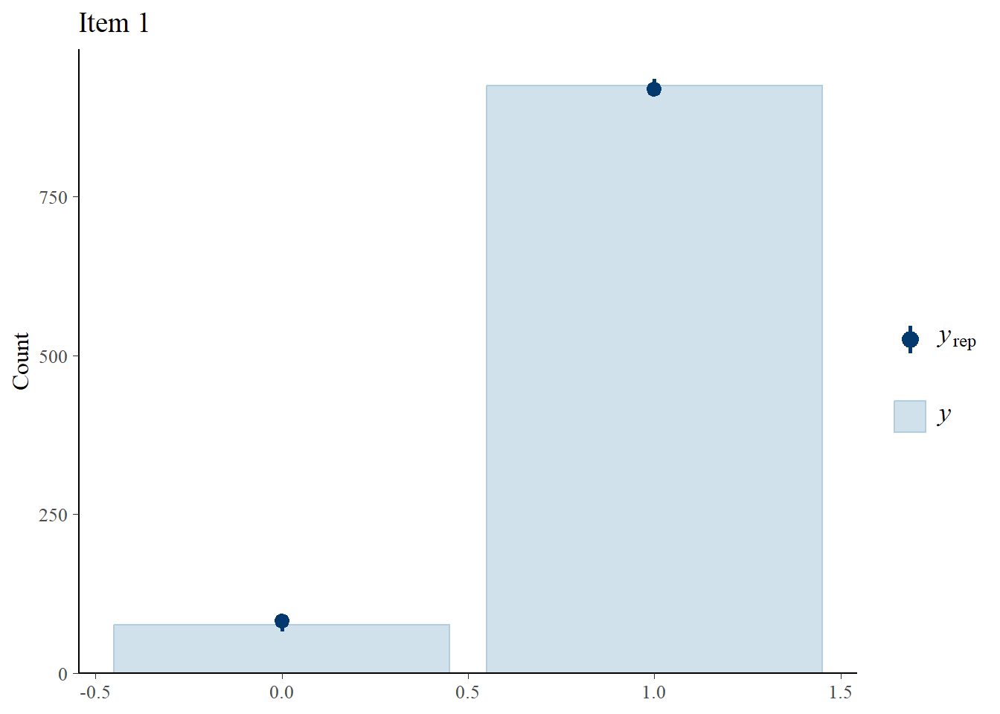
ppc_bars(Y[,2],Y.rep[1:8,,2]) +ggtitle("Item 2")
ppc_bars(Y[,3],Y.rep[1:8,,3]) +ggtitle("Item 3")
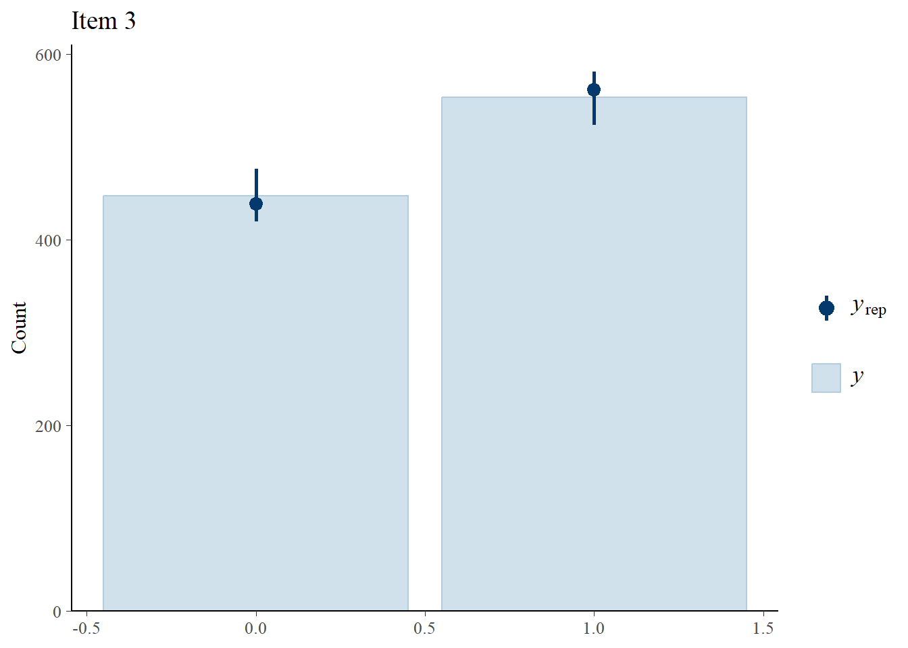
ppc_bars(Y[,4],Y.rep[1:8,,4]) +ggtitle("Item 4")
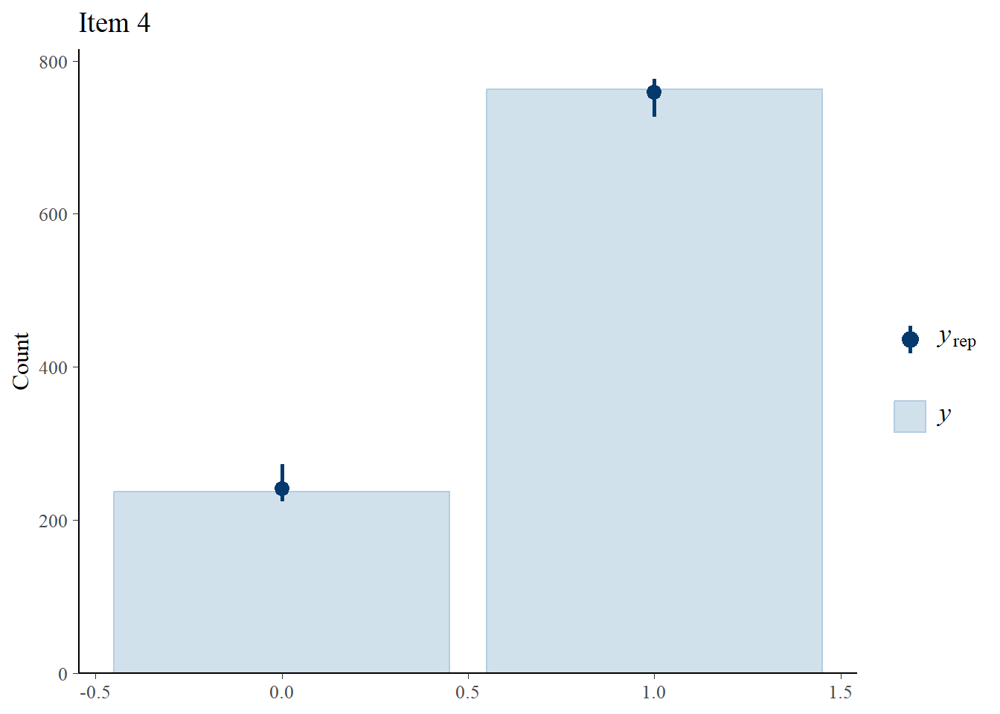
ppc_bars(Y[,5],Y.rep[1:8,,5]) +ggtitle("Item 5")
We can also compare the fit of the 1PLM, 2PLM and 3PLM using relative measures of fit or information criteria. These are computed based on the deviance and a penalty for model complexity called the effective number of parameters \(p\). Here we consider two Bayesian measures known as the Widely Applicable (WAIC) and Leave One Out (LOOIC) Information Criterion, which can be easily obtained through the functions waic and loo in the package loo.
Both criteria suggest that both 1PLM and 2PLM have a better fit to the data than 3PLM.
Plot ability scores
Plot the density curve of the estimated ability scores
#summary stats for theta across both iterations and individualssummary(theta)
NA Min. 1st Qu. Median Mean 3rd Qu. Max.
NA -1.8453432 -0.4371787 0.0632952 0.0001144 0.6473378 0.7082924
#histogram and kernel density plot of theta averaged across iterationsdens.theta<-density(theta, bw=0.3)hist(theta, breaks =5, prob = T)lines(dens.theta, lwd=2, col="red")
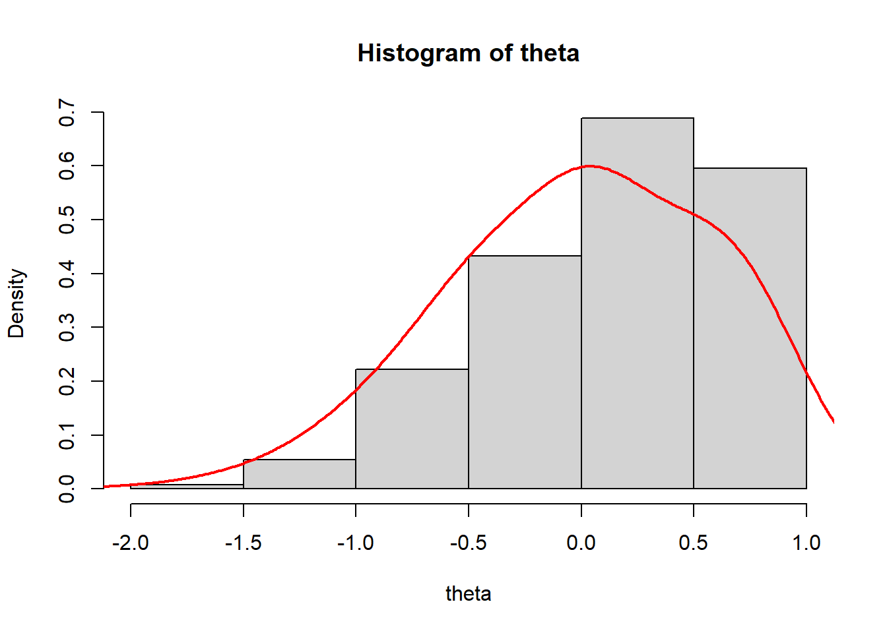
We see that the mean of ability scores is around \(0\), and the standard deviation about \(1\) (these are estimated ability scores are standardised).
Conclusions
The use of Stan software to estimate IRT models allows the user to alter existing code to fit new variations of current models that cannot be fit in existing software packages. For example, longitudinal or multilevel data can easily be accommodated by small changes to existing Stan code. The Stan software takes care of the “grunt work” involved in estimating model parameters by constructing an MCMC algorithm to sample from the posterior distribution. Using Stan frees the user to experiment with different models that may be more appropriate for specialised data than the models that can currently be fit in other software packages. Of course, more complicated models involve more parameters than simpler models, and the analyst must specify prior distributions for these new parameters. This is a small price to pay, however, for the flexibility that the Bayesian framework and Stan software provide.
References
Baker, Frank B, and Seock-Ho Kim. 2004. Item Response Theory: Parameter Estimation Techniques. CRC Press.
Gelman, Andrew, Daniel Lee, and Jiqiang Guo. 2015. “Stan: A Probabilistic Programming Language for Bayesian Inference and Optimization.”Journal of Educational and Behavioral Statistics 40 (5): 530–43.
Hambleton, Ronald K, Hariharan Swaminathan, and H Jane Rogers. 1991. Fundamentals of Item Response Theory. Sage.
Luo, Yong, and Hong Jiao. 2018. “Using the Stan Program for Bayesian Item Response Theory.”Educational and Psychological Measurement 78 (3): 384–408.
Stan Development Team. 2018. “RStan: The R Interface to Stan.”http://mc-stan.org/.
![]()